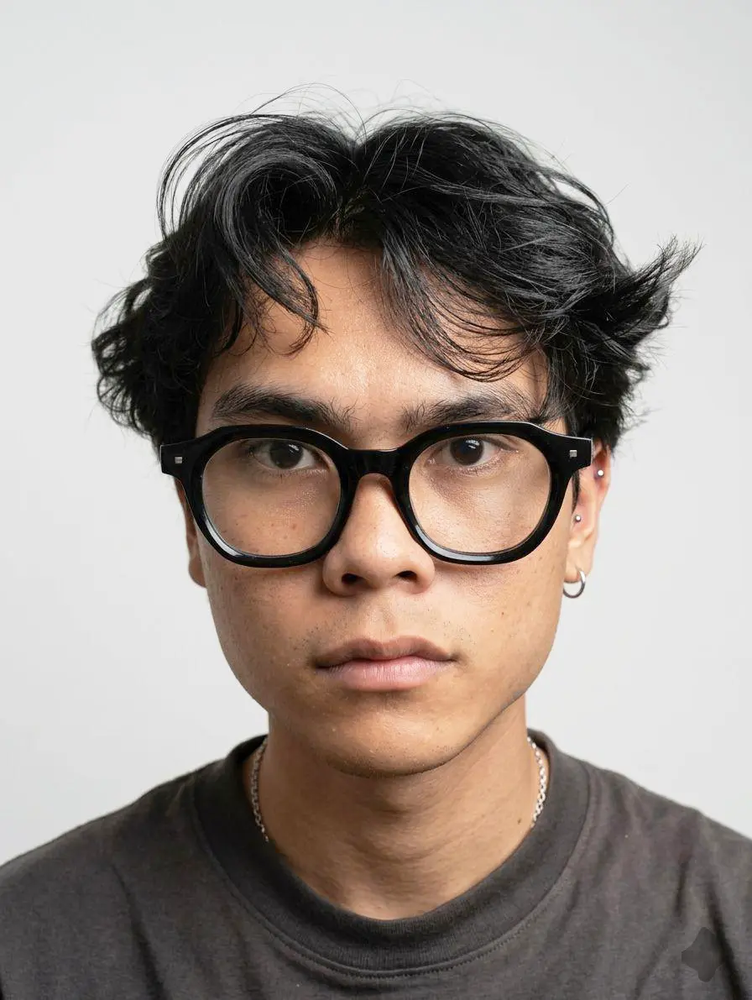

I'm Tri Prastio Nugroho a designer and creative technologist based in BSD, Tangerang. I work at the intersection of interaction design, motion, and generative visuals to create experiences that feel both purposeful and alive.

I'm a designer who believes great design lives at the tension between logic and feeling. My work spans across product design, motion, and creative technology I use tools like Figma, Framer, TouchDesigner, and Rive to bring ideas to life across different mediums.
What drives me is the space between a design and its execution the micro interaction that makes something feel polished, or the generative system that turns static visuals into something that breathes.